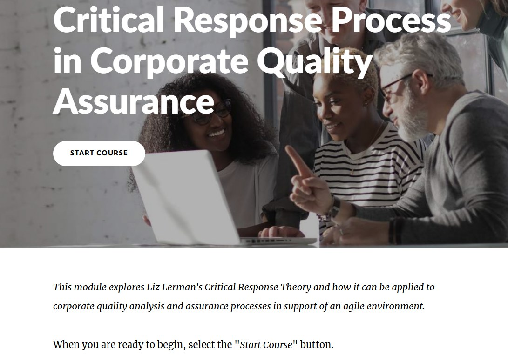
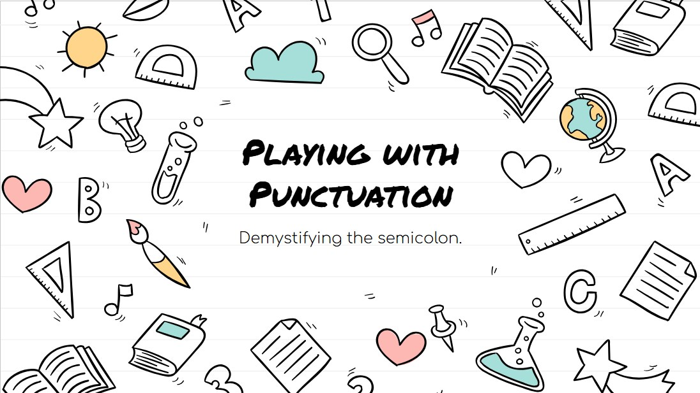
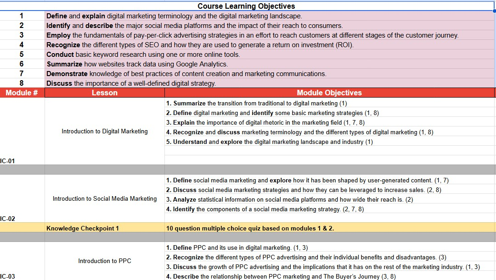

Articulate Rise · Corporate
Critical Response Process for Corporate QA
Liz Lerman's Critical Response Process, adapted from the arts world for use in agile QA team feedback loops.
Launch the module →We design, build, and implement the learning experience ourselves, from full LMS courses to the videos, media, and materials inside them, alongside the writing, design, and presentations that carry our work everywhere else. Pick a category below to see it.

Liz Lerman's Critical Response Process, adapted from the arts world for use in agile QA team feedback loops.
Launch the module →
A micro-learning deck demystifying one of the most misused punctuation marks: the semicolon.
View →
First of a 14-course sequence used at 20+ universities internationally.
View →
A sequence of graduate education courses built for Alvernia University's TExpL® Institute (Total Experience Learning), each with a custom homepage, structured modules, and supporting visuals for the framework itself.


An instructional video for the grant-funded WOLFIE Writers initiative, written, illustrated, and produced start to finish using VideoScribe and Audacity.
A companion piece in the WOLFIE Writers series, also written, illustrated, and produced solo.


Enamel pin, extending the cracked-glass motif

QR sticker, a companion piece to the pin
Cover design, interior layout, and companion merch, built as one cohesive visual system for a published poetry collection.
Brand identity for EdTOK, the edtech venture we co-founded.
The CRB2 Foundation is a federally recognized 501(c)(3) nonprofit providing community and education for families touched by the Crumbs family of diseases.
A woman-owned business that plans "bookish" events and gatherings for the Buffalo community.

A faculty PD session on the psychology of gamification, including a step-by-step method for building your own Canvas escape room.

A teaching demonstration that walks through Gagné's Nine Events of Instruction by performing them on the audience as it goes.
A chapter on multimodal writing pedagogy, co-authored with Christopher Petty, published in Palgrave's Teaching Writing Across Theatre and Performance Studies.
About the chapter →A collection of poetry that finds hope tangled up with dread, published under our imprint Aspen & Olive.
The full collection →A personal essay on disability stigma, language, and parenting a child with a rare disease.
Read on The Mighty →A review of Bill Irwin and David Shiner's Old Hats at the Signature Theatre, published in Volume 10 of the Texas Theatre Journal.
Read the essay (PDF) →A blog post on preserving wedding keepsakes through handmade paper craft, for Papercraft Miracles.
Read →